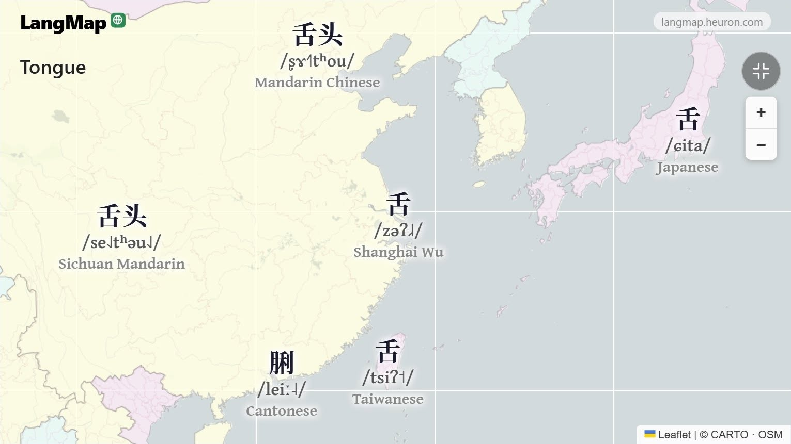

Sinosphere · · revised · Facebook post
One Variety in the Sinosphere Refuses to Write 舌 for "Tongue"
- Across the Sinosphere the tongue is written 舌, but Cantonese writes 脷.
- In Cantonese, 舌 sounds like a word for losing, so the tongue was renamed after 利, "profit".
- The organ itself is a word that half the world also uses for "language".

Contents
舌 everywhere, except one place
Across the Sinosphere, the tongue is written with one character:
舌
Mandarin builds on it:
Mandarin: 舌头 (shétou)
Hakka: 舌嫲
Taiwanese: 喙舌 (tshuì-tsi̍h), literally "mouth-tongue"
Japanese writes 舌 for its native word shita. Korean has native 혀 (hyeo), and Sino-Korean still reads 舌 as seol. Vietnamese says lưỡi, and reads 舌 as thiệt in Sino-Vietnamese.
One variety refuses.
Cantonese: 脷 (lei6)
Not 舌, but a different character altogether.
A tongue that sounds like a loss
The usual explanation is a matter of sound.
In Cantonese, 舌 sounds like 蝕, "to lose (money)", and like 折. Every mention of your tongue at the dinner table would carry that echo.
舌 sit6 = 蝕 sit6 "to lose out" (as in 蝕本, "to lose money")
That is the reading the standard Cantonese pronunciation dictionaries give for 舌. Many Hong Kong speakers today also say 舌 sit3, the form the Han Map shows. Either way, the everyday word is 脷: words.hk labels 舌頭 as written language.
So the word was replaced by 利, "benefit, profit", a word that sounds lucky instead.
Then the character was specialised. Add the flesh radical 月 (肉) to 利, and you get:
脷 = 月 (肉) "flesh" + 利 "profit"
A phono-semantic character: the flesh element says what it is, 利 gives the sound and the luck.
Other Cantonese varieties agree. On the map, 脷 is the word from Hong Kong to Taishan, Dongguan, Nanning and Zhongshan.
Not the only lucky rename
Rewriting a word because it sounds unlucky is not unheard of in Cantonese.
The almanac, 通書, is called 通勝, because 書 sounds like 輸, "to lose".
An empty flat for rent, 空屋, is advertised as a 吉屋, "lucky house", because 空 sounds like 凶, "ill-omened".
But those are books and buildings.
Doing it for a body part, something you name every day, is striking.
Or a much older word?
There is another possibility, and it is worth keeping in mind.
Wiktionary notes that the Cantonese word may instead come from 舐, "to lick". If so, its l- would preserve an Old Chinese initial l-, long lost in Mandarin 舐 shì.
Baxter and Sagart reconstruct the Old Chinese form of 舌 itself as *mə.lat, with an l in it too.
So the lucky story may be the reason the word is written 脷, while the word itself could be older than the pun. The two explanations are not settled.
A tongue that speaks
And this is a word half the world also uses for "language".
Latin: lingua
Arabic: لسان (lisān)
Turkish: dil
Russian: язык (yazyk)
Hungarian: nyelv
Each of them is the organ in your mouth, and also the language you speak with it.
On the Word Map, 322 cells name "language" after the tongue. Latin lingua, English tongue and Russian язык may even go back to one Proto-Indo-European word.
The organ in your mouth becomes the name for what you say with it.
A word that close to home is exactly the kind you would want to keep lucky.